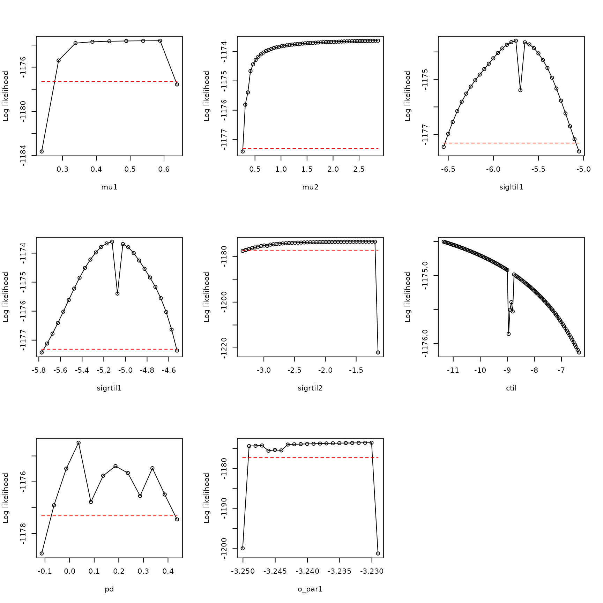
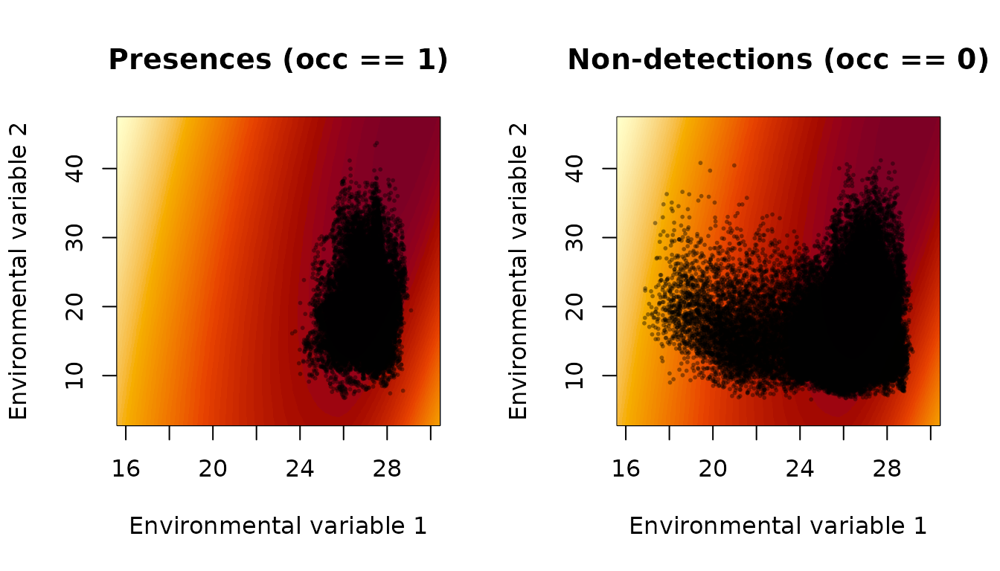
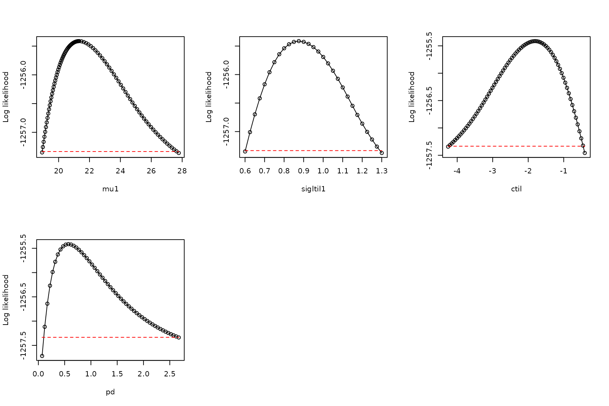

Unusable models: when a model does not have a maximum likelihood
Daniel C. Reuman
Department of Ecology and Evolutionary Biology and Center for Ecological Research, University of KansasAngel Luís Robles Fernández
Department of Ecology and Evolutionary Biology and Center for Ecological Research, University of KansasSource:
vignettes/unuseable_models.Rmd
unuseable_models.Rmd\[ \newcommand{\mean}[1]{\overline{#1}} \newcommand{\var}{\text{var}} \newcommand{\cov}{\text{cov}} \newcommand{\cor}{\text{cor}} \newcommand{\Rp}{\text{Re}} \newcommand{\E}{\text{E}} \newcommand{\ltsgr}{\text{ltsgr}} \newcommand{\expit}{\text{expit}} \newcommand{\logit}{\text{logit}} \]
Abstract. When an xsdm model does not have a maximum likelihood, it should not be used. This document shows an example of how that can occur, and how to diagnose it. Along the way, another type of boundary model (in addition to the \(p_d=1\) case described elsewhere) is illustrated, where sigma parameters are set to infinity, corresponding to insensitivity of annual net growth to environmental changes in a certain direction in environment space.
The Eastern glass lizard, Ophisaurus ventralis, is a legless lizard found in the southeastern United States. It is the longest and heaviest species of its genus, growing up to 108cm in total length.
We start by loading the data:
## [1] 2728 39 6
dimnames(env_array)[[3]]## [1] "BIO01" "BIO10" "BIO11" "BIO12" "BIO16" "BIO17"
occ <- example_2$occ_vec
length(occ)## [1] 2728Here, there are 6 environmental variables recorded for 39 years in
2728 locations, with accompanying detections and pseudo-absences in the
variable occ. The first three environmental variables
(BIO1, BIO10, BIO11) are temperature variables, and the last three
(BIO12, BIO16, BIO17) are precipitation variables. BIO1 is mean annual
temperature, BIO10 is mean temperature of the warmest quarter, BIO11 is
mean temperature of the coldest quarter, BIO12 is annual precipitation,
BIO16 is precipitation of the wettest quarter, and BIO17 is
precipitation of the driest quarter.
Now look at the distributions of values of environmental variables to make sure they are not on very different scales, which would cause problems for optimization:
## BIO01 BIO10 BIO11 BIO12 BIO16 BIO17
## 2.5% 12.21381 21.39449 3.847143 88.08287 10.14201 2.213420
## 25% 16.87778 25.76851 8.884324 114.44185 14.34298 4.366665
## 50% 18.71020 26.63721 11.528053 131.57598 17.40133 5.776966
## 75% 20.42655 27.33272 14.381416 151.15700 20.91240 7.222351
## 97.5% 24.29674 28.29841 20.728660 195.81223 29.55371 10.721530These distributions look basically OK.
Now fit 15 models, each from 25 starting conditions:
models <- matrix(c(1,0,0,0,0,0,
0,1,0,0,0,0,
0,0,1,0,0,0,
0,0,0,1,0,0,
0,0,0,0,1,0,
0,0,0,0,0,1,
1,0,0,1,0,0,
1,0,0,0,1,0,
1,0,0,0,0,1,
0,1,0,1,0,0,
0,1,0,0,1,0,
0,1,0,0,0,1,
0,0,1,1,0,0,
0,0,1,0,1,0,
0,0,1,0,0,1), nrow=15, byrow=TRUE)
all_model_results <- list()
for (i in 1:nrow(models))
{
print(i)
env_dat <- env_array[ , , models[i,]==1, drop = FALSE]
starts <- xsdm::start_parms(env_dat,num_starts=25)
all_optim_results <- list()
for (j in 1:nrow(starts))
{
all_optim_results[[j]] <- optim(par = starts[j,],
fn = xsdm::loglik_math,
method = "BFGS",
env_dat = env_dat,
occ = occ,
negative=TRUE,
control = list(trace=0)
)
}
all_model_results[[i]] <- all_optim_results
}## [1] 1
## [1] 2
## [1] 3
## [1] 4
## [1] 5
## [1] 6
## [1] 7
## [1] 8
## [1] 9
## [1] 10
## [1] 11
## [1] 12
## [1] 13
## [1] 14
## [1] 15Within each model, rank the optimization results:
for (i in 1:length(all_model_results))
{
values <- sapply(X = all_model_results[[i]], FUN=function(x){x$value})
inds <- order(values)
all_model_results[[i]] <- all_model_results[[i]][inds]
}Rank the models by BIC, bearing in mind that we’ve been working with the negative of the likelihood:
model_BICs <- sapply(X=all_model_results,
FUN=function(x){
best_loglik = x[[1]]$value
num_parms = length(x[[1]]$par)
n = length(occ)
BIC = 2*best_loglik + num_parms*log(n)
return(BIC)
}
)Also by AIC, then display:
model_AICs <- sapply(X=all_model_results,
FUN=function(x){
best_loglik = x[[1]]$value
num_parms = length(x[[1]]$par)
AIC = 2*best_loglik + 2*num_parms
return(AIC)
}
)
inds <- order(model_BICs)
rbind(model_BICs[inds],model_AICs[inds])## [,1] [,2] [,3] [,4] [,5] [,6] [,7] [,8]
## [1,] 2419.976 2475.012 2483.864 2550.383 2580.205 2586.123 2593.541 2595.887
## [2,] 2366.774 2421.810 2430.662 2520.826 2550.648 2556.567 2540.339 2542.685
## [,9] [,10] [,11] [,12] [,13] [,14] [,15]
## [1,] 2598.207 2602.745 2604.566 2676.652 2682.972 2915.417 2945.895
## [2,] 2545.005 2549.543 2551.364 2647.095 2629.771 2885.860 2916.339
plot(model_BICs,model_AICs,type="p",xlab="BIC",ylab="AIC")
order(model_BICs)## [1] 11 8 14 5 3 1 13 15 7 10 9 2 12 4 6
order(model_AICs)## [1] 11 8 14 5 13 15 7 10 3 9 1 12 2 4 6The AIC and BIC results are pretty well aligned, and the four best models are the same:
models[order(model_BICs)[1:4],]## [,1] [,2] [,3] [,4] [,5] [,6]
## [1,] 0 1 0 0 1 0
## [2,] 1 0 0 0 1 0
## [3,] 0 0 1 0 1 0
## [4,] 0 0 0 0 1 0These four models all use the same predictor, the fifth one, and then some use various possible second predictors.
We emphasize that these BIC and AIC values may or may not be meaningful, since B/AIC can only be computed when the likelihood has been effectively maximized. We will elaborate below, but for now we accept these are pseudo-BIC and pseudo-AIC values, subject to later validation or rejection.
Among the models we fitted, there is one clear winner in pseudo-BIC (the model with the lowest pseudo-BIC). So let’s investigate it further. Start by optimizing it a bit harder to see if we can do any better.
i <- 11
env_dat <- env_array[,,models[i,]==1,drop=FALSE]
starts <- xsdm::start_parms(env_dat, num_starts = 100)
model_11_results <- list()
for (j in 1:nrow(starts))
{
model_11_results[[j]] <- optim(par=starts[j,],fn=xsdm::loglik_math,
method="BFGS",
env_dat = env_dat,
occ = occ,negative=TRUE,
control = list(trace=0))
}
all_model_results[[11]][[1]]$value## [1] 1174.387## [1] 1174.358We did slightly better.
Now move forward by looking at the results for this model, starting by writing a convenience function for examine optimization results:
examine_optim_results <- function(optim_results,mask=NULL)
{
#put optimization results in order from best to worst
bestlogliks <- sapply(X=optim_results,FUN=function(x){x$value})
inds <- order(bestlogliks)
bestlogliks <- bestlogliks[inds]
optim_results <- optim_results[inds]
#model convergence
convergences <- sapply(X=optim_results,FUN=function(x){x$convergence})
#compute distances to the best result in parameter space
best_parms_math <- optim_results[[1]]$par
parms_dists_to_best <- lapply(
X=optim_results,
FUN=function(x){
xsdm::dist_between_params(
x$par,
best_parms_math,
mask=mask,
give_closest_rep=TRUE)
}
)
parms_dists <- sapply(X=parms_dists_to_best, FUN=function(x){x$distance})
bestparms <- sapply(X=parms_dists_to_best, FUN=function(x){unlist(x$representative)})
#put it all together
return(rbind(bestlogliks,convergences,parms_dists,bestparms))
}
h <- examine_optim_results(all_model_results[[11]])
t(h[ ,1:8])## bestlogliks convergences parms_dists mu1 mu2 sigltil1 sigltil2
## [1,] 1174.387 1 0.0000000 29.57020 49.29810 6.756977 0.3229890
## [2,] 1174.401 0 0.5859204 29.51797 48.76833 6.712916 0.3204482
## [3,] 1174.402 0 0.9789580 29.48883 48.51728 6.743663 0.3206293
## [4,] 1174.501 0 4.5949969 29.27613 45.08749 6.389406 0.3216162
## [5,] 1174.651 0 8.1485420 29.02521 41.69399 5.967757 0.3223082
## [6,] 1174.914 1 11.1587772 28.75596 38.79300 5.554391 0.3166147
## [7,] 1175.863 1 17.9850159 28.24080 32.26778 4.556045 0.3343546
## [8,] 1191.515 1 26.0302129 25.49789 25.89912 3.692422 0.1491745
## sigrtil1 sigrtil2 ctil pd o_mat1 o_mat2
## [1,] 7.046197e+07 0.6289928 -13.341008 0.5391707 0.08390085 0.9964741
## [2,] 1.384284e+03 0.6350676 -13.097945 0.5397470 0.08322911 0.9965304
## [3,] 7.271401e+00 0.6414683 -12.773869 0.5423547 0.08273170 0.9965719
## [4,] 7.432221e+01 0.6429637 -11.525366 0.5447050 0.08524555 0.9963600
## [5,] 3.051849e+03 0.6411525 -10.463891 0.5446606 0.08697090 0.9962109
## [6,] 1.675251e+02 0.6467664 -9.667969 0.5407474 0.08542828 0.9963443
## [7,] 1.450113e+03 0.6305582 -7.715589 0.5425700 0.09176909 0.9957803
## [8,] 2.001261e+02 1.4406561 -3.561796 0.6463683 0.05403175 0.9985392
## o_mat3 o_mat4
## [1,] -0.9964741 0.08390085
## [2,] -0.9965304 0.08322911
## [3,] -0.9965719 0.08273170
## [4,] -0.9963600 0.08524555
## [5,] -0.9962109 0.08697090
## [6,] -0.9963443 0.08542828
## [7,] -0.9957803 0.09176909
## [8,] 0.9985392 -0.05403175The very large values of sigltil2 suggest the boundary
model where this parameter is set to Inf, corresponding to
a direction in environment space along which annual net growth is
insensitive to changes in the environment.
So we consider the corresponding boundary model:
i <- 11
env_dat <- env_array[ , , models[i,] == 1, drop=FALSE]
mask <- c(sigltil2 = Inf)
new_starts <- xsdm::start_parms(env_dat[occ == 1, , , drop=FALSE],
mask = mask,
num_starts = 100)
bdry_optim_results <- list()
for (j in 1:nrow(new_starts))
{
bdry_optim_results[[j]] <- optim(par = new_starts[j,],
fn = xsdm::loglik_math,
method = "BFGS",
env_dat = env_dat,
occ = occ,
mask = mask,
negative = TRUE,
control = list(trace=0, maxit=500))
}Now look at these results:
h <- examine_optim_results(bdry_optim_results, mask = mask)
t(h[ ,1:8])## bestlogliks convergences parms_dists mu1 mu2 sigltil1 sigltil2
## [1,] 1174.383 0 0.000000 29.54018 49.36105 0.3210456 Inf
## [2,] 1174.428 0 2.270107 29.40971 47.22162 0.3260759 Inf
## [3,] 1174.429 0 1.605016 29.45947 47.78484 0.3213987 Inf
## [4,] 1174.459 0 3.552250 29.36449 46.03792 0.3221828 Inf
## [5,] 1174.460 0 3.721816 29.38319 45.86091 0.3189471 Inf
## [6,] 1174.461 0 3.348700 29.34209 46.19974 0.3227267 Inf
## [7,] 1174.467 0 3.816496 29.33221 45.75031 0.3249694 Inf
## [8,] 1174.514 0 4.440936 29.27391 45.10866 0.3203804 Inf
## sigrtil1 sigrtil2 ctil pd o_mat1 o_mat2 o_mat3
## [1,] 0.6388589 6.828110 -13.08712 0.5419305 -0.9966100 0.08227152 -0.08227152
## [2,] 0.6323058 6.605075 -12.34106 0.5432132 -0.9964342 0.08437295 -0.08437295
## [3,] 0.6319924 6.600745 -12.79593 0.5395897 -0.9964516 0.08416780 -0.08416780
## [4,] 0.6413753 6.500209 -11.84444 0.5441682 -0.9963309 0.08558412 -0.08558412
## [5,] 0.6438809 6.470119 -11.83188 0.5438304 -0.9962602 0.08640397 -0.08640397
## [6,] 0.6387116 6.487872 -12.00068 0.5428971 -0.9964215 0.08452320 -0.08452320
## [7,] 0.6327994 6.436740 -11.86922 0.5432412 -0.9963061 0.08587280 -0.08587280
## [8,] 0.6352971 6.314430 -11.83495 0.5410060 -0.9963489 0.08537497 -0.08537497
## o_mat4
## [1,] -0.9966100
## [2,] -0.9964342
## [3,] -0.9964516
## [4,] -0.9963309
## [5,] -0.9962602
## [6,] -0.9964215
## [7,] -0.9963061
## [8,] -0.9963489The best likelihoods obtained for this boundary model are very
similar to those obtained for the initial, non-boundary model, and the
boundary model has one fewer parameter, so we tentatively adopt the
boundary model over the earlier model. However, these optimization
results reveal that we probably still have not successfully optimized
the likelihood, or that the likelihood surface may have a ridge or an
asymptote or other pathological feature. One sees this by observing that
whereas the top several optimization results are similar in likelihood,
they are spread out in parameter space (the parms_dists
column shows distance in parameter space to the top-likelihood
result).
To investigate the model further, we profile:
pnames <- names(xsdm::make_mask_names(2))
pnames <- pnames[!(pnames %in% names(mask))]
values <- sapply(X=bdry_optim_results, FUN=function(x){x$value})
inds <- order(values)
bdry_optim_results <- bdry_optim_results[inds]
all_profiles <- list()
linc <- rep(0.05, length(pnames))
rinc <- rep(0.05, length(pnames))
linc[8] <- 0.001
rinc[8] <- 0.001
for (counter in 1:length(pnames))
{
all_profiles[[counter]] <- xsdm::profile_likelihood(
profile_parameter = pnames[counter],
increment_left =linc[counter],
increment_right = rinc[counter],
num_steps_left = 50,
num_steps_right = 50,
alpha = 0.95,
optim_param_vector = bdry_optim_results[[1]]$par,
env_dat=env_dat,
occ = occ,
mask = mask,
num_threads = 6
)
}
names(all_profiles) <- pnamesNow plot these profiles:
plot_tool <- function(ap,index)
{
x <- ap[[index]]$profile$value_math
y <- ap[[index]]$profile$loglik
xlab <- names(ap)[index]
thresh <- ap[[index]]$threshold
plot(x,y,
type="o",xlab=xlab,
ylab="Log likelihood")
lines(range(x),rep(thresh,2),type="l",
lty="dashed",col="red")
}
par(mfrow=c(3,3))
plot_tool(all_profiles, 1)
plot_tool(all_profiles, 2)
plot_tool(all_profiles, 3)
plot_tool(all_profiles, 4)
plot_tool(all_profiles, 5)
plot_tool(all_profiles, 6)
plot_tool(all_profiles, 7)
plot_tool(all_profiles, 8)
These profiles are not dome-shaped, and have other idiosyncratic
features, confirming that we had not effectively optimized the
likelihood. The mu2, mu2, and
ctil profile, in particular, show problems.
We do a pairs plot based on the mu2 profile to
investigate further:
p <- all_profiles[[2]]$parameters
head(p)## mu1 mu2 sigltil1 sigrtil1 sigrtil2 ctil pd o_par1
## 1 29.48830 46.86105 -1.125491 -0.4557567 1.884494 -12.18998 0.1752261 28.18643
## 2 29.49244 46.91105 -1.125463 -0.4558283 1.885342 -12.20692 0.1751763 28.18644
## 3 29.49657 46.96105 -1.125436 -0.4558988 1.886187 -12.22387 0.1751268 28.18645
## 4 29.50070 47.01105 -1.125408 -0.4559709 1.887032 -12.24082 0.1750787 28.18645
## 5 29.50483 47.06105 -1.125381 -0.4560410 1.887874 -12.25776 0.1750283 28.18646
## 6 29.50896 47.11105 -1.125354 -0.4561114 1.888716 -12.27471 0.1749793 28.18647
## sigltil2
## 1 Inf
## 2 Inf
## 3 Inf
## 4 Inf
## 5 Inf
## 6 Inf
p <- p[,1:8]
pairs(p)This pairs plot helps us see the tradeoff going on between
parameters. As mu2 is increased, other parameters,
especially ctil, change monotonically. These results
suggest a ridge in the likelihood surface that appears to rise
asymptotically along some path in parameter space for which
mu2 is increasing. We have not identified a maximum of the
likelihood function, and it looks as though there may not be one if the
increase is indeed asymptotic.
We look at what the growth-environment function looks like for the best parameters we have found so far, maybe that will give some insight into what is going wrong:
param_list <- bdry_optim_results[[1]]$par
param_list["sigltil2"] <- Inf
param_list <- param_list[names(xsdm::make_mask_names(2))]
param_list_bio <- xsdm::math_to_bio(param_list)
xsdm::interpret_parameters(param_list = param_list_bio,
plot_indices = c(1,2), env_dat=env_dat, occ = occ)
param_list_bio$mu## [1] 29.54018 49.36105Estimated values of mu2 are outside the range of the
environmental data. The actual distribution of the species is across
Florida and along the coasts of the Southeastern United States, and the
southern extent of the species is very likely constrained, on the
southern end of the range, by the Atlantic Ocean and the Gulf of Mexico
rather than by temperature and precipitation. Ultimately the modeling
probably fails here for these reasons. A Bayesian approach to the same
problem could likely address some of the limitations, here, by setting
appropriate priors. In the frequentist setting, one must discard the
model. AIC and BIC values are invalid when the likelihood has not been
adequately optimized and when the likelihood surface in the vicinity of
the optimum is not approximately a dome.
Immediate next steps should include examination of the second- and third-best models according to pseudo-BIC, to see if they have similar problems. For brevity and because we are just trying to illustrate statistical principles and workflows, we skip straight to examining the fourth-best model, which may be simpler because it only uses one environmental variable.
i <- 5
model_5_optim_results <- all_model_results[[i]]
h <- examine_optim_results(model_5_optim_results)
t(h[,1:8])## bestlogliks convergences parms_dists mu sigltil sigrtil
## [1,] 1255.413 0 0.0000000000 21.33107 2.399377 2.118516e+10
## [2,] 1255.413 0 0.0004197821 21.33126 2.399545 2.920212e+06
## [3,] 1255.413 0 0.0043099086 21.33486 2.400216 6.664093e+02
## [4,] 1255.413 0 0.0026177746 21.33112 2.399409 3.823882e+02
## [5,] 1255.413 0 0.0048557198 21.33091 2.399476 2.081599e+02
## [6,] 1255.413 0 0.0050103153 21.33193 2.399567 2.028698e+02
## [7,] 1255.413 0 0.0085735571 21.33750 2.400909 1.924419e+02
## [8,] 1255.413 0 0.0077033263 21.32708 2.398714 1.601479e+02
## ctil pd o_mat
## [1,] -1.806885 0.6389692 1
## [2,] -1.806516 0.6390226 1
## [3,] -1.808277 0.6388442 1
## [4,] -1.806788 0.6390008 1
## [5,] -1.806209 0.6390998 1
## [6,] -1.807133 0.6389728 1
## [7,] -1.809112 0.6387623 1
## [8,] -1.804798 0.6391885 1One can see the boundary model with sigrtil set to
Inf should be considered:
env_dat <- env_array[,,models[i,]==1,drop=FALSE]
mask <- c(sigrtil1 = Inf)
new_starts <- xsdm::start_parms(env_dat[occ==1,,,drop=FALSE],mask=mask,
num_starts=100)
bdry_optim_results5 <- list()
for (j in 1:nrow(new_starts))
{
bdry_optim_results5[[j]] <- optim(par=new_starts[j,],fn=xsdm::loglik_math,
method="BFGS",
env_dat=env_dat,occ=occ,mask=mask,negative=TRUE,
control=list(trace=0,maxit=500))
}Examine these results:
h <- examine_optim_results(bdry_optim_results5,mask=mask)
t(h[,1:8])## bestlogliks convergences parms_dists mu sigltil sigrtil ctil
## [1,] 1255.413 0 0.000000e+00 21.33077 2.399367 Inf -1.806580
## [2,] 1255.413 0 5.541131e-06 21.33077 2.399364 Inf -1.806580
## [3,] 1255.413 0 1.106869e-04 21.33084 2.399365 Inf -1.806666
## [4,] 1255.413 0 8.056066e-05 21.33085 2.399382 Inf -1.806604
## [5,] 1255.413 0 8.187806e-05 21.33085 2.399383 Inf -1.806602
## [6,] 1255.413 0 9.230256e-05 21.33086 2.399392 Inf -1.806604
## [7,] 1255.413 0 6.184834e-05 21.33078 2.399388 Inf -1.806519
## [8,] 1255.413 0 1.275865e-04 21.33086 2.399361 Inf -1.806675
## pd o_mat
## [1,] 0.6390007 1
## [2,] 0.6390003 1
## [3,] 0.6389913 1
## [4,] 0.6390001 1
## [5,] 0.6389986 1
## [6,] 0.6390002 1
## [7,] 0.6390074 1
## [8,] 0.6389931 1
values <- sapply(X=bdry_optim_results5, FUN=function(x){x$value})
inds <- order(values)
bdry_optim_results5 <- bdry_optim_results5[inds]This model looks like it probably optimized well.
Next do profiles:
all_profiles <- list()
pnames <- names(xsdm::make_mask_names(1))
pnames <- pnames[pnames!="sigrtil1"]
linc <- c(0.05,0.025,0.05,0.05)
rinc <- c(0.15,0.025,0.05,0.05)
for (counter in 1:length(pnames))
{
all_profiles[[counter]] <- xsdm::profile_likelihood(
profile_parameter = pnames[counter],
increment_left = linc[counter],
increment_right = rinc[counter],
num_steps_left = 50,
num_steps_right = 50,
alpha = 0.95,
optim_param_vector = bdry_optim_results5[[1]]$par,
env_dat = env_dat,
occ = occ,
mask = mask,
num_threads = 6
)
}
names(all_profiles) <- pnames
par(mfrow=c(2,3))
plot_tool(all_profiles,1)
plot_tool(all_profiles,2)
plot_tool(all_profiles,3)
plot_tool(all_profiles,4)
The profiles look adequate. So the model is suitable for use, unlike the previous model. The BIC and AIC for this model are valid. If the second- or third-best model is suitable in the same manner, the lowest-BIC model suitable model should tend to be preferred.